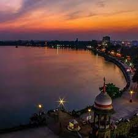

Rankala Lake

Before the eighth century, Rankala was a stone quarry. In the 9th century, an earthquake caused immense structural damage to the quarry,
causing water to accumulate from an underground source forming the Rankala Lake. This historic lake features a Hindu temple with a Nandi.
According to local Hindu beliefs, Lord Shiva uses the Nandi, moves a single wheat grain towards the lake,
and backs about a distance of single rice grain daily. Hindu beliefs state that if Lord Shiva reaches Rankala, the apocalypse will begin.
Video Link
Direction to the Rankala Lake